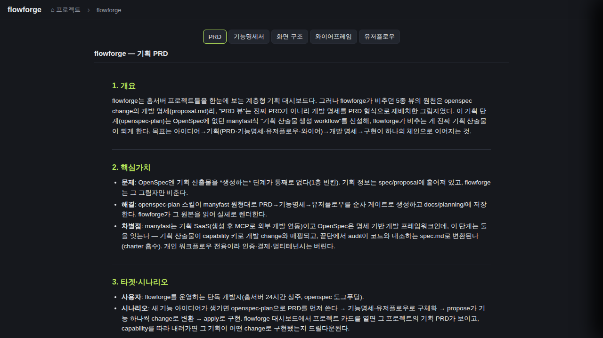
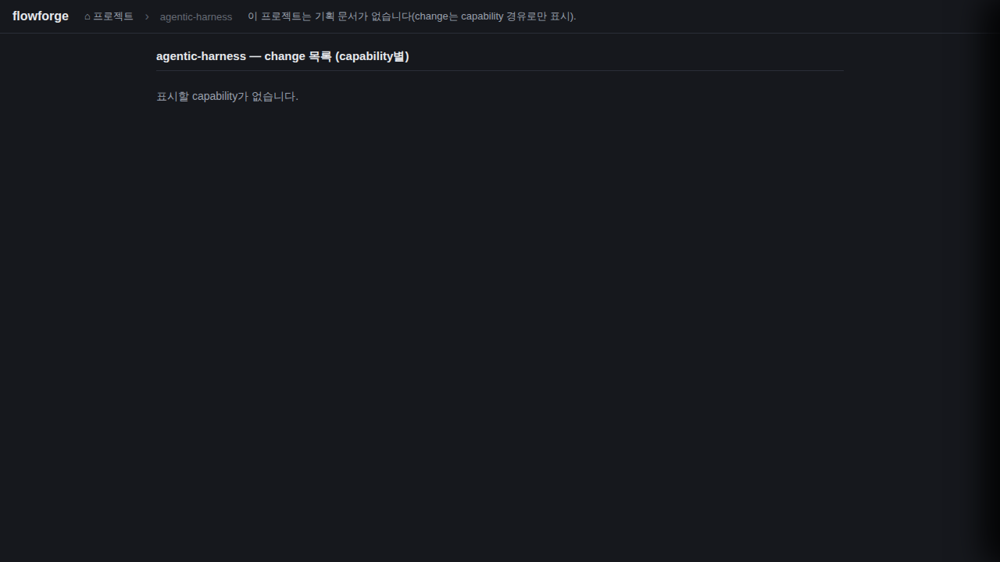
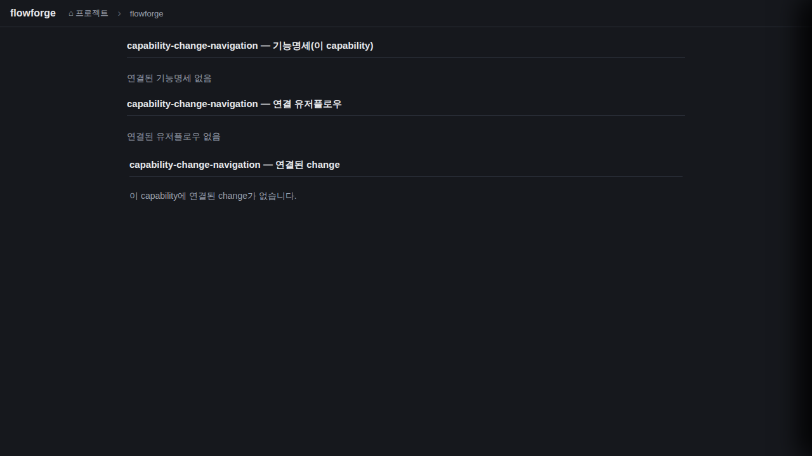
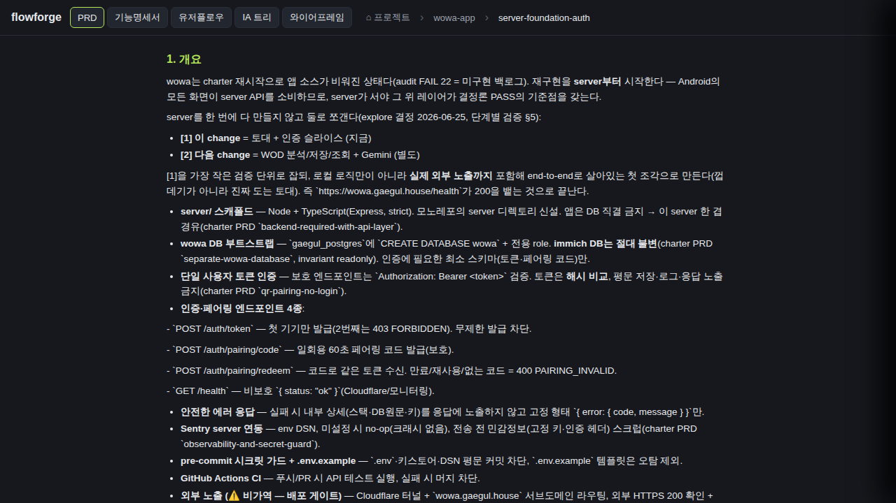
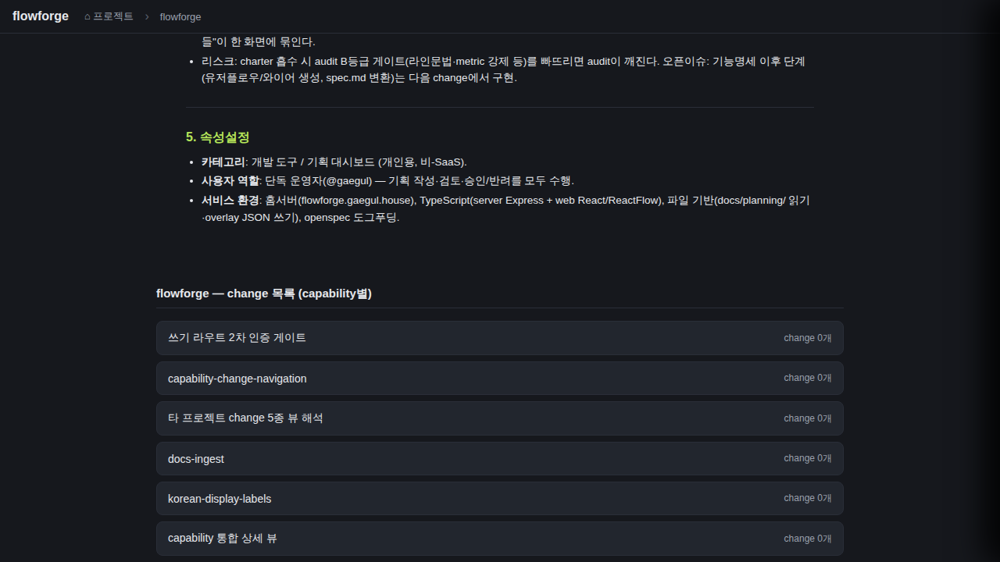

검증일: 2026-07-10T15:20:00+09:00 · 환경: web(applicable — vite/React SPA, gstack 라이브 실픽셀) · server(SKIPPED: 이 change는 프론트 전용, 서버·API·DB 무변경) · android/ios(SKIPPED: 해당 레이어 없음) · run: run-20260710-1520 · commit c01577d3 (dirty)
PASS 6 · FAIL 0 · 검증 안 함 0 · SKIPPED 0
| Requirement | Scenario | Layer | 검증 수단 | 탐지 근거(basis) | 결과 | 증거 |
|---|---|---|---|---|---|---|
| 기획문서 유무와 무관하게 change 목록을 항상 노출한다 | 기획문서 있는 프로젝트(flowforge)에서 기획 탭과 change 목록이 병존한다 | web | gstack 라이브 실픽셀 — flowforge skeleton 열어 기획 탭 바(data-testid=plan-tabs)와 그 아래 change 목록(h3 + 24개 dash-cap 버튼) 병존 육안 확인 | web adapter: vite/React SPA, docker 라이브(HTTP 200), ~/.cache/ms-playwright chromium | ✓ PASS |  |
| 기획문서 유무와 무관하게 change 목록을 항상 노출한다 | 기획문서 없는 프로젝트는 기존처럼 change 목록만 노출된다(회귀 없음) | web | gstack 라이브 실픽셀 — 실제 hasCharter:false 프로젝트(agentic-harness)에서 기획 탭 바 미노출 + change 목록만 렌더 = 기존 동작 동일 확인. (지정된 wowa-app은 실측 hasCharter:true라 회귀 대상으로 부적합 → 진짜 문서 없는 프로젝트로 검증) | web adapter: /api/projects hasCharter=false 실측으로 회귀 대상 선정 | ✓ PASS |  |
| change 목록에서 5종 뷰로 진입할 수 있다 | capability를 선택하면 그 capability의 change 목록으로 들어간다 | web | gstack 라이브 — flowforge·wowa-app 양쪽 capability 버튼(dash-cap) 클릭 시 capChanges 단계(기능명세/유저플로우/연결 change 3섹션) 이동 확인. openCapability→setDashStage('capChanges') grep 실재(:911). | web adapter: gstack 클릭 실동작 + static grep(onClick openCapability :1214) | ✓ PASS |  |
| change 목록에서 5종 뷰로 진입할 수 있다 | change를 선택하면 그 change의 5종 탭으로 진입하고 PRD 탭이 활성화된다 | web | gstack 라이브 — wowa-app server-foundation-auth change 클릭 → ?project=&change=&tab=prd 딥링크 진입, 5종 탭 바 표시, PRD 탭 [pressed] 활성, 본문 렌더 확인. openChangeViews→setTab('prd')+setDashStage('views') grep 실재(:926-927). ※flowforge 자체는 in-progress change라 capability→changeKeys 매핑이 archive 시점 생성 전이라 비어있음 → 게이트 제거와 무관한 별개 데이터 파이프라인 특성. spec 시나리오(change 있는 capability 전제)는 wowa-app에서 실증. | web adapter: gstack 클릭 실동작 + static grep(onOpenChange openChangeViews :1265) | ✓ PASS |  |
| change나 capability가 없는 프로젝트를 안전하게 표면화한다 | capability가 0개인 프로젝트 — 안내 노출 | web | gstack 라이브 — agentic-harness(capability 0개)에서 '표시할 capability가 없습니다' 안내 노출 확인. capabilities.length===0 ? <p.dash-empty> grep 실재(:1208-1209). | web adapter: gstack 실픽셀 + static grep | ✓ PASS | |
| change나 capability가 없는 프로젝트를 안전하게 표면화한다 | change가 0개인 capability — 개수 0 표기, 클릭 시 오류 없음 | web | gstack 라이브 — flowforge/wowa-app 양쪽 다수 capability가 'change 0개'로 표기, 클릭 시 capChanges에서 '이 capability에 연결된 change가 없습니다' 안내(크래시 없음) 확인. change {cap.changeKeys.length}개 grep 실재(:1216). | web adapter: gstack 실동작 + static grep | ✓ PASS |  |
| Requirement | null | 빈값 | 잘못된타입 | 경계값 | 에러경로 | 동시성 | 대량 | 특수문자 | 판정 |
|---|---|---|---|---|---|---|---|---|---|
| 기획문서 유무와 무관하게 change 목록을 항상 노출한다 | N/A | ✓ | N/A | ✓ | N/A | N/A | N/A | N/A | ✓ 충분 |
| change 목록에서 5종 뷰로 진입할 수 있다 | N/A | ✓ | N/A | ✓ | ✓ | N/A | N/A | N/A | ✓ 충분 |
| change나 capability가 없는 프로젝트를 안전하게 표면화한다 | N/A | ✓ | N/A | ✓ | N/A | N/A | N/A | N/A | ✓ 충분 |
✓=covered · N/A=해당없음(사유 hover) · ✗=missing. happy-path만이면 검증 불충분 → 최종 FAIL 차단.
| Layer | 상태 | ran | passed | failed | 근거/사유 |
|---|---|---|---|---|---|
| web | ✓ PASS | 6 | 6 | 0 | 6개 시나리오 전부 라이브 실픽셀 PASS |
| server | – SKIPPED | 0 | 0 | 0 | 적용 불가: 서버 레이어 변경 없음 |
| android | – SKIPPED | 0 | 0 | 0 | 적용 불가: android 레이어 없음 |
| ios | – SKIPPED | 0 | 0 | 0 | 적용 불가: ios 레이어 없음(macOS 필요) |
✓ PASS 통과
archiveGate.open = true (PASS일 때만 true). verify.json이 이 값을 archive 게이트에 전달.
{kind=link}
{kind=link}
{kind=link}
{kind=link}
{kind=link}